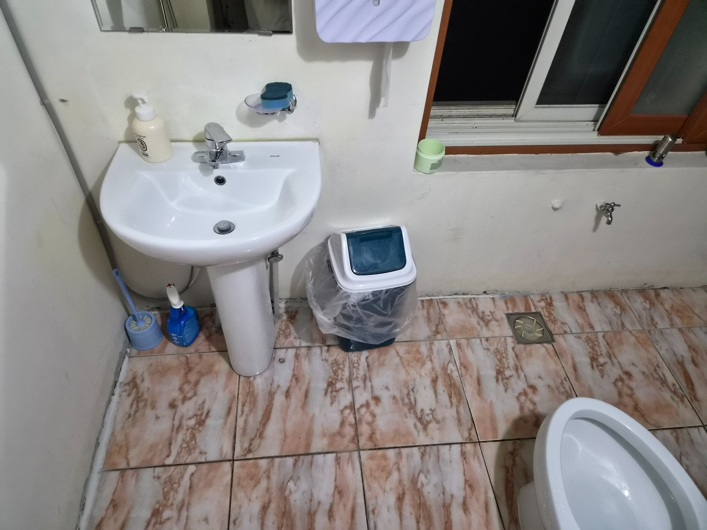
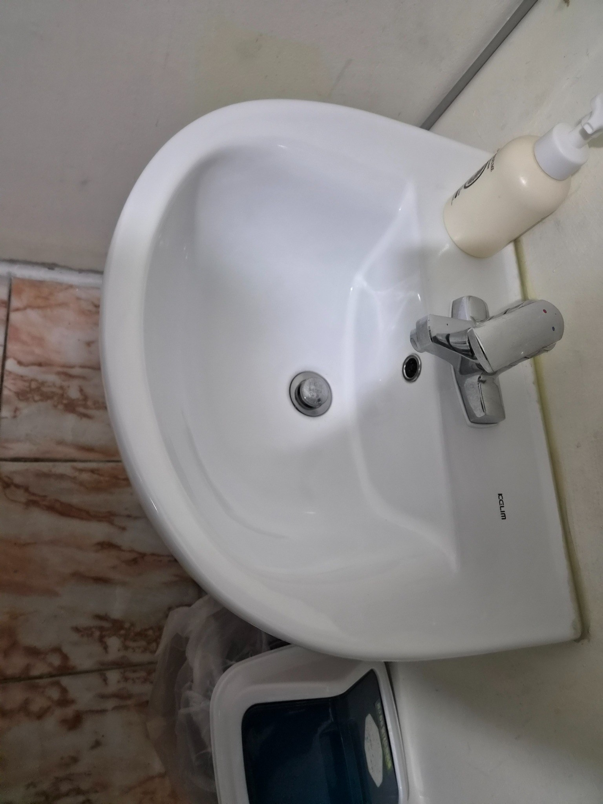
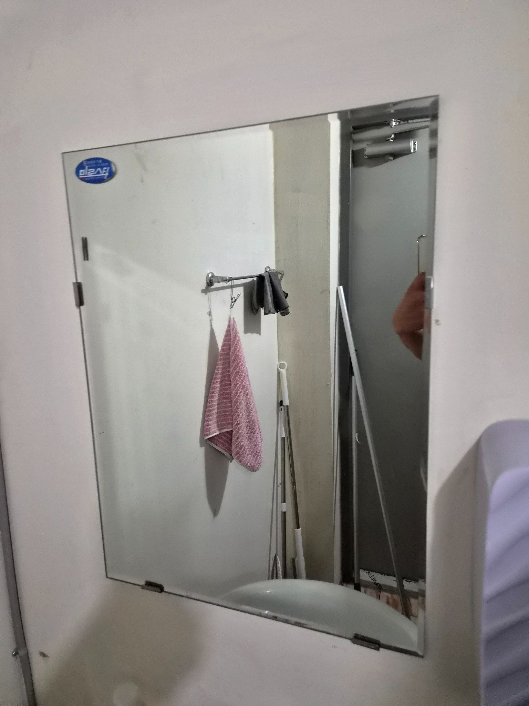
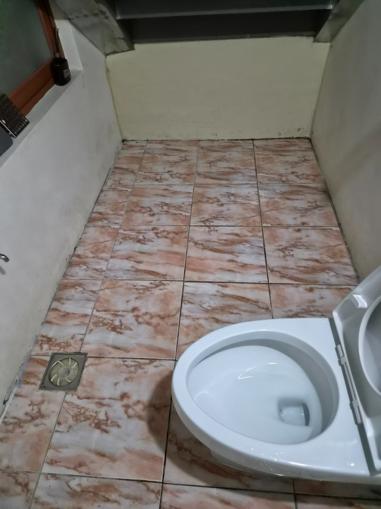

세면대 주변의 생활오염을 정리했습니다
세면대는 비누와 물이 반복해서 닿아 배수구와 수전 주변에 잔여물이 남기 쉽습니다. 도기 곡면과 벽면 하단을 함께 닦아 경계 부분이 탁해 보이지 않도록 합니다. 마감 후 물기를 정리하면 전체가 훨씬 밝아 보입니다.

수전과 도기 표면의 물자국을 확인합니다
수전 표면은 작은 물자국도 조명 아래에서 잘 보입니다. 세정 후에는 마른 상태를 확인하고 배수구 주변에 잔여 오염이 없는지 다시 봅니다. 사용자가 가장 먼저 보는 부분이기 때문에 세면대 마감은 중요합니다.

거울과 세면공간을 함께 정리합니다
거울은 물방울과 손자국이 쉽게 남는 부분입니다. 거울만 닦기보다 세면대와 주변 벽면까지 이어서 정리하면 공간 전체가 더 깔끔하게 보입니다. 가장자리와 하단부의 얼룩도 함께 확인합니다.

바닥은 줄눈과 코너 오염을 함께 봅니다
화장실 바닥은 물기가 반복되면서 줄눈 색이 탁해질 수 있습니다. 중앙보다 벽면과 변기 주변에 오염이 모이는 경우가 많아 구역을 나누어 세정합니다. 배수구 쪽으로 오염수가 남지 않도록 마감합니다.
상가 화장실은 짧은 주기로 관리할수록 유지가 쉽습니다
상가 방문객이 많을수록 물기와 휴지조각, 바닥 오염이 빠르게 늘어납니다. 오염이 굳기 전에 정기적으로 관리하면 한 번에 강한 세정이 필요한 상황을 줄일 수 있습니다.
김해 삼계 상가청소와 함께 묶어 상담할 수 있습니다
공용화장실과 복도, 계단, 엘리베이터 앞을 한 번에 관리하면 건물 전체의 청결 기준을 맞추기 쉽습니다. 현장 구조와 이용량을 확인한 뒤 필요한 범위만 구성합니다.
현장에 맞춘 무료 방문견적
정기청소와 상가·사무실·화장실 청소는 공간 크기만으로 동일한 견적을 내기 어렵습니다. 퍼펙트케어는 현장의 이용량, 바닥 재질, 오염도, 관리 범위를 확인한 뒤 필요한 작업을 안내합니다.